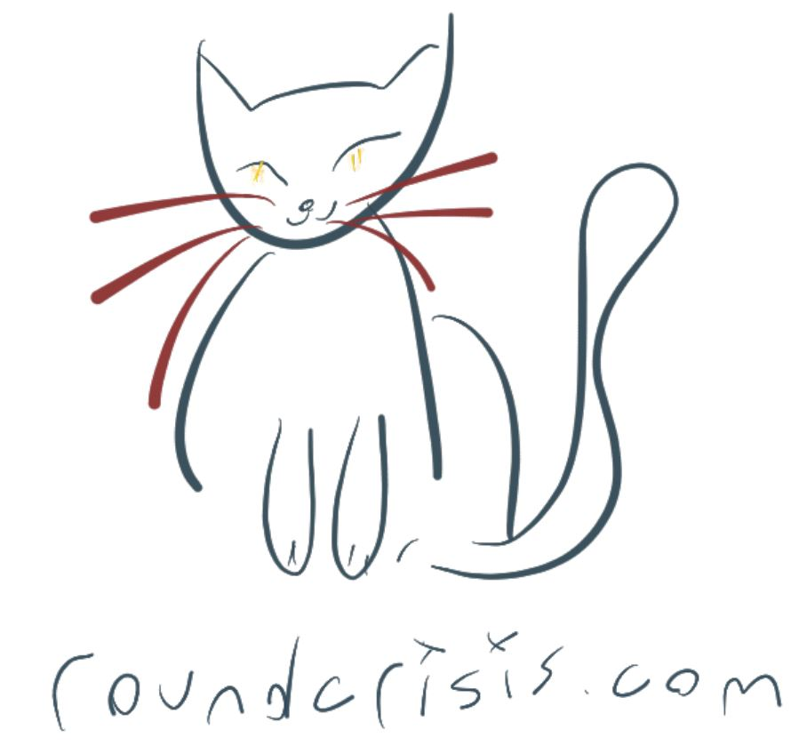
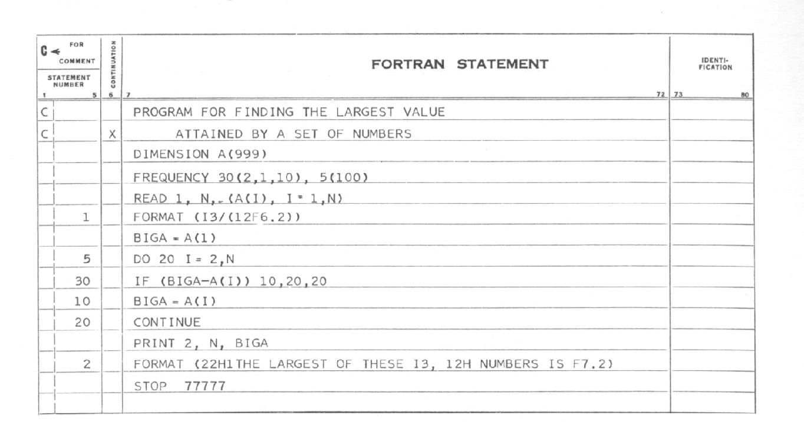

type 'T list = List<'T>
Full name: Microsoft.FSharp.Collections.list<_>
Full name: Microsoft.FSharp.Collections.list<_>
Multiple items
val int : value:'T -> int (requires member op_Explicit)
Full name: Microsoft.FSharp.Core.Operators.int
--------------------
type int = int32
Full name: Microsoft.FSharp.Core.int
--------------------
type int<'Measure> = int
Full name: Microsoft.FSharp.Core.int<_>
val int : value:'T -> int (requires member op_Explicit)
Full name: Microsoft.FSharp.Core.Operators.int
--------------------
type int = int32
Full name: Microsoft.FSharp.Core.int
--------------------
type int<'Measure> = int
Full name: Microsoft.FSharp.Core.int<_>
Multiple items
val string : value:'T -> string
Full name: Microsoft.FSharp.Core.Operators.string
--------------------
type string = System.String
Full name: Microsoft.FSharp.Core.string
val string : value:'T -> string
Full name: Microsoft.FSharp.Core.Operators.string
--------------------
type string = System.String
Full name: Microsoft.FSharp.Core.string
A brief history of programming languages
Lambda days - February 2016

David Hilbert
We must know. We will know.
Can we devise a process to determine in a finite number of operations, whether a first order logic statement is valid?
Nope
Kurt Gödel
Alonzo Church
λ Calculus
Alan Turing
Turing Machine

Church-Turing Thesis
World war II
Grace Hopper
The first compiler: A-0
FLOW-MATIC
1: 2: 3: 4: 5: 6: 7: 8: 9: 10: 11: 12: 13: |
0) INPUT INVENTORY FILE=A PRICE FILE=B, OUTPUT PRICED-INV FILE=C UNPRICED-INV FILE=D, HSP D. 1) COMPARE PRODUCT-NO(A) WITH PRODUCT-NO(B) IF GREATER GO TO OPERATION 10; IF EQUAL GO TO OPERATION 5; OTHERWISE GO TO OPERATION 2. 2) TRANSFER A TO D. 3) WRITE ITEM D. 4) JUMP TO OPERATION 8. 5) TRANSFER A TO C. |
1: 2: 3: 4: 5: 6: 7: 8: 9: 10: 11: 12: 13: 14: |
6) MOVE UNIT-PRICE(B) TO UNIT-PRICE(C). 7) WRITE ITEM C. 8) READ ITEM A; IF END OF DATA GO TO OPERATION 14. 9) JUMP TO OPERATION 1. 10) READ ITEM B; IF END OF DATA GO TO OPERATION 12. 11) JUMP TO OPERATION 1. 12) SET OPERATION 9 TO GO TO OPERATION 2. 13) JUMP TO OPERATION 2. 14) TEST PRODUCT-NO(B) AGAINST ZZZZZZZZZZZZ; IF EQUAL GO TO OPERATION 16; OTHERWISE GO TO OPERATION 15. 15) REWIND B. 16) CLOSE-OUT FILES C, D. 17) STOP. (END) |
John Backus
Speedcoding
BNF

John McCarthy
Lisp
AI, time-sharing
ALGOL
'50s
- ALGOL (58)
- COBOL (59)
- FORTRAN (57)
- LISP (59)
LISP
1: 2: 3: 4: 5: 6: 7: 8: 9: 10: 11: 12: 13: |
(defun eval. (e a) (cond ((atom e) (assoc. e a)) ((atom (car e)) (cond ((eq (car e) 'quote) (cadr e)) ((eq (car e) 'atom) (atom (eval. (cadr e) a))) ((eq (car e) 'eq) (eq (eval. (cadr e) a) (eval. (caddr e) a))) ((eq (car e) 'car) (car (eval. (cadr e) a))) ((eq (car e) 'cdr) (cdr (eval. (cadr e) a))) ((eq (car e) 'cons) (cons (eval. (cadr e) a) (eval. (caddr e) a))) |
1: 2: 3: 4: 5: 6: 7: 8: 9: 10: 11: |
((eq (car e) 'cond) (evcon. (cdr e) a))
('t (eval. (cons (assoc. (car e) a)
(cdr e))
a))))
((eq (caar e) 'label)
(eval. (cons (caddar e) (cdr e))
(cons (list. (cadar e) (car e)) a)))
((eq (caar e) 'lambda)
(eval. (caddar e)
(append. (pair. (cadar e) (evlis. (cdr e) a))
a)))))
|
1: 2: 3: 4: 5: 6: 7: |
(defun is-prime (n) (cond ((= 2 n) t) ((= 3 n) t) ((evenp n) nil) (t (loop for i from 3 to (isqrt n) by 2 never (zerop (mod n i)))))) |
'60s
- APL (62)
- BASIC (64)
- LOGO (67)
- Pascal (69)
APL
\((\sim T \in T \circ.×T)/T←1 \downarrow \iota R\)
'70s
- Smalltalk (72)
- ML (73)
- Prolog (72)
- C (72)
Prolog
Prolog is the best thing since smoked cheese
Prolog
1: 2: 3: 4: 5: 6: 7: 8: 9: 10: |
mother_child(trude, sally). father_child(tom, sally). father_child(tom, erica). father_child(mike, tom). sibling(X, Y) :- parent_child(Z, X), parent_child(Z, Y). parent_child(X, Y) :- father_child(X, Y). parent_child(X, Y) :- mother_child(X, Y). |
'80s
- Erlang (86)
- SQL (83)
- Miranda (85)
- C++ (83)
Erlang
1: 2: 3: 4: 5: 6: 7: 8: |
-module(mymath). -export([square/1,fib/1]). square(Value) -> Value*Value. fib(0) -> 0; fib(1) -> 1; fib(N) when N>1 -> fib(N-1) + fib(N-2). |
'90s
- Haskell (90)
- Delphi (95)
- Java (95)
- Ruby (95)
- Python(91)
- Visual Basic (91)
- Javascript (95)
Javascript
1: 2: 3: 4: 5: 6: |
function factorial(n) { if (n == 0) { return 1; } return n * factorial(n - 1); } |
'00s
- C# (00)
- Scala (04)
- F# (05)
- Clojure (07)
- D (01)
- Go(07)
D
1: 2: 3: 4: 5: 6: 7: 8: 9: 10: 11: 12: 13: |
void Quack(Animal)(Animal a) if( __traits(compiles, a.Quack())) { a.Quack(); } struct Duck { void Quack(){ "Quack".writeln; }} int main(string[] argv) { Duck d; Quack(d); // good Quack(5); // compile time error } |
'10s
- Elixir (12)
- Elm (12)
- Rust (10)
- Pony (14)
- Idris (12)
Idris
1: 2: 3: 4: 5: 6: 7: 8: |
data Vect : Nat -> Type -> Type where Nil : Vect 0 a (::) : (x : a) -> (xs : Vect n a) -> Vect (n + 1) a total append : Vect n a -> Vect m a -> Vect (n + m) a append Nil ys = ys append (x :: xs) ys = x :: append xs ys |

We must know. We Will know
Thanks :D

- @SilverSpoon
- roundcrisis.com
Events and User Groups

- Functional Kats
- Other user groups about programming languages that have no cats with capes on their logos :D
Resources
- Programming languages: History and future (1972 Jean E. Sammet)
- Definition of Turing Machines - Standford Encyclopedia of Philosophy
- This has happened before and will happen again - Strange Loop conference recording- Video
- David Hilbert
- Alan Kay: Computer Applications: A Dynamic Medium for Creative Thought 1972
- The APL Programming Language Source Code
- Roots of computer languages through the ages
- Principal programming paradigms
{kind=link}
Photo credits
- history main starting the talk
- "Alonzo Church" by Princeton University. Licensed under Fair use via Wikipedia
{kind=link}